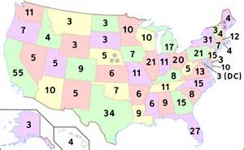
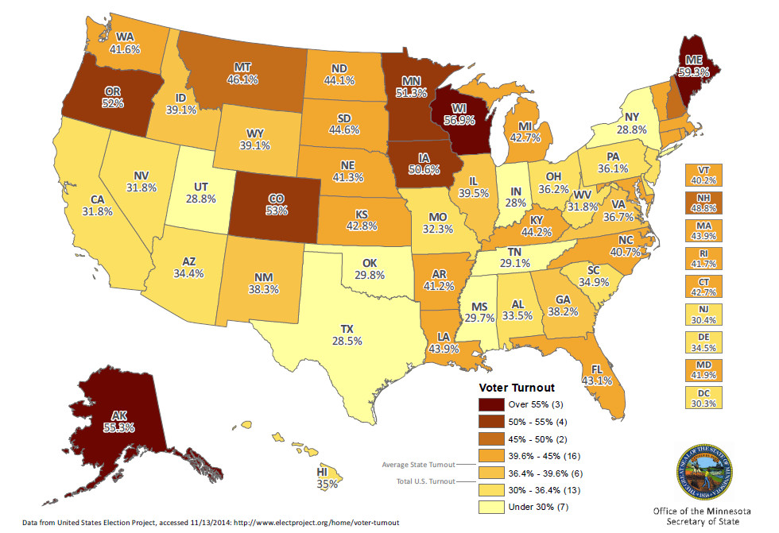

Information for Voters

Congress Representatives

Voter ID Laws

Voter Turnout
Congress Representatives
Voter ID Laws
Voter Turnout
Does your state allow paid time off to vote? Click here to find out